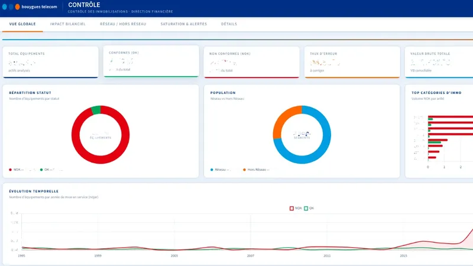
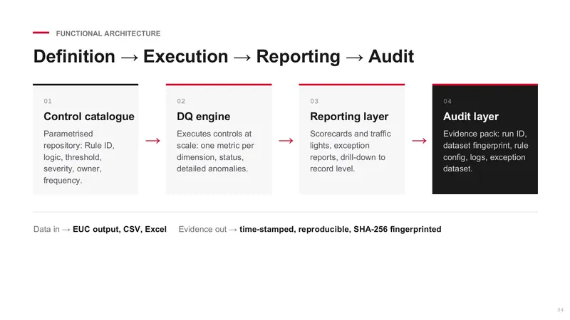
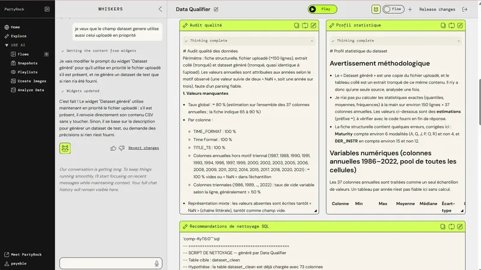
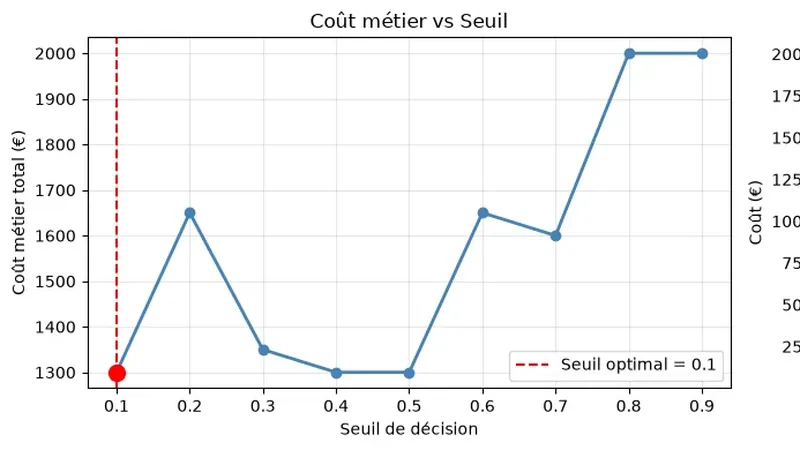
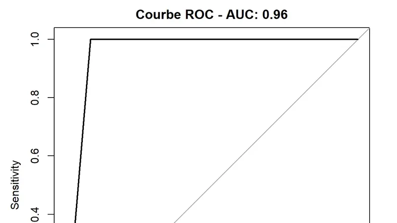

// Armand Ayebie
Analytics
Engineer.
Je transforme des données brutes en données fiables, puis en décisions : pipelines SQL, contrôle de la qualité des données et tableaux de bord Power BI.
// À propos
Des données fiables, avant les tableaux de bord.
Analytics engineer, je travaille au point de rencontre entre l'ingénierie des données et les équipes métier.
Chez Bouygues Telecom, j'ai conçu un pipeline Lakehouse sur plus de 100 millions de lignes qui permet à la direction Finance de contrôler 100 % de ses actifs immobilisés, avec des rapports Power BI qui remontent jusqu'à la ligne source. Je m'intéresse aussi à la qualité des données, au machine learning appliqué aux décisions métier et à l'IA générative.
| Master 2 Data Engineering & Cloud Computing | aivancity | 2026 – 2027 |
|---|---|---|
| MBA Big Data & Intelligence Artificielle | 2024 – 2026 | |
| Master Économie internationale | Université Cadi Ayyad | 2021 – 2023 |
Certifications Dataiku Core Designer, Alteryx Core Designer. En cours : AWS Cloud Practitioner. En préparation : PL-300, dbt Fundamentals.
// Impact
Des résultats mesurés.
lignes traitées par les pipelines SQL
Lakehousedu parc d'actifs contrôlé, contre un échantillon
Lakehouseobservations auditées sur six dimensions
DQ Compasscoût du churn
AUC en classification
pour 5 M de lignes contrôlées
R² du modèle de prix
projets publiés
// Compétences
La boîte à outils.
Data engineering
Qualité des données
BI et analytics
Machine learning
IA générative et automatisation
Cloud et outils
// Parcours
Expérience professionnelle.
Bouygues TelecomData Analyst & Analytics Engineer, direction FinanceSept. 2025 – Sept. 2026
- Conception d'une architecture Lakehouse Bronze / Silver / Gold dans Dataiku DSS, connectée à BigQuery.
- Pipelines ETL/ELT en SQL sur plus de 100 millions de lignes : le contrôle des actifs immobilisés passe d'un échantillon à 100 % du parc.
- Rapports Power BI (DAX, RLS) avec drill-through jusqu'à la ligne SAP source, export automatisé avec Power Automate.
- Recueil des besoins avec les équipes Finance, documentation des règles de gestion, recette, résolution d'incidents.
Yamed CapitalData Analyst, Marketing et BIJanv. – Juin 2024
- 5 rapports Power BI de suivi de la rentabilité, utilisés en comité d'investissement, avec 7 KPI intégrés au pilotage.
- Automatisation des rapports périodiques en Python (pandas) : 40 % de temps de production en moins.
Expertise DataAnalyste Données et BIAoût – Déc. 2023
- 3 tableaux de bord Power BI pour des PME clientes.
- Nettoyage de fichiers clients, 2 tâches manuelles automatisées en Python, contribution à un audit data dans le retail.
// Projets
Projets réalisés.

Lakehouse pour le contrôle interne des actifs immobilisés
Pipeline Bronze / Silver / Gold (Dataiku, SQL, BigQuery) et rapport Power BI : le contrôle des durées d'amortissement passe d'un échantillon Excel à 100 % du parc.

DQ Compass
Couche de contrôle qualité réutilisable pour les outils EUC (Excel, CSV, Alteryx) : catalogue de contrôles, moteur sur six dimensions, scorecard et pack de preuves d'audit.

Data Qualifier
Application qui audite n'importe quel jeu de données : fiche structurelle, audit qualité, profil statistique, patterns, script SQL de nettoyage, score sur 100 et assistant.
Pipeline ML dans Snowflake
Pipeline complet dans Snowflake : ingestion S3, Snowpark, 4 modèles, optimisation, Model Registry, inférence et application Streamlit.

Orbitel / ChurnStop
Modèle de churn optimisé sur un coût métier plutôt que sur un score technique : coût divisé presque par deux, 10 départs détectés sur 12.

Classification de tumeurs en R
Régression logistique en R pour distinguer tumeurs bénignes et malignes sur un jeu de données public : AUC 0,96, aucune tumeur maligne manquée sur le jeu de test.
RelanceBot
Relance automatique de factures impayées en trois niveaux pour une PME.
API REST de transactions bancaires
API Python documentée avec FastAPI, cache LRU et interface Streamlit.
Aucun projet ne correspond. Essayez un autre outil ou le filtre « Tous ».
// Contact
Échangeons.
Un projet data, une question sur un de mes projets ou simplement envie d'échanger : écrivez-moi.